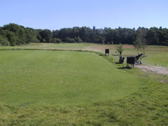

<div class="pages">
  <div data-page="hul4" class="page navbar-fixed toolbar-fixed" >
    <div class="navbar">
      <div class="navbar-inner">
        <div class="left">
          <a href="#" class="link back icon-only"><i class="icon icon-back"></i></a>
          <!-- <a href="#" class="back link icon-only"><i class="icon icon-back"></i></a> -->
        </div>
        <div class="center">Hul 4</div>
        <!-- <div class="right"></div> -->
        <div class="right">
        </div>
      </div>
    </div>
    <div class="page-content" style="padding-top:45px;">
       <div class="content-block">
          <p>Hole-in-one sponsor:</p>
          <center></center>
          <p>Banens første par 3 hul. 169 meter fra gult tee og uden tvivl noget af en ulv i fåreklæder. Hullet har en smuk baggrund og terrænnet falder lidt fra tee til green. Pas på out of bounds i hullets venstre side, Gurre å umiddelbart bag green samt den strategisk placerede bunker foran til højre for green. Hvis du har slag på hullet, er det måske en ide at placere udslaget kort af green.</p>
          <center></center>
          <p>Giv dig god tid til at læse green, da denne på intet sted er vandret, men skråner fra bagkant til forkant og svagt fra venstre mod højre.</p>
          <p>For lav-handicapperen er valget af kølle naturligvis altafgørende og vær opmærksom på at der ofte er læ på tee-stedet, selv om det blæser pænt. Land bolden umiddelbart før green, alt afhængig hvor tørt eller vådt der er.</p>
          <p>Hulsponsor: <br />
          <br /><br />
          Bænksponsor:<br />
          
          </p>
        </div>
    </div>
    </div>
    </div>
  </div>
</div>
